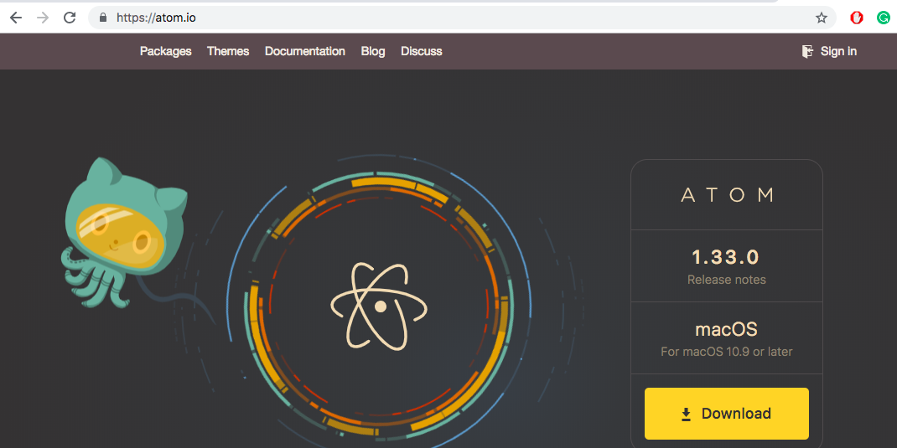
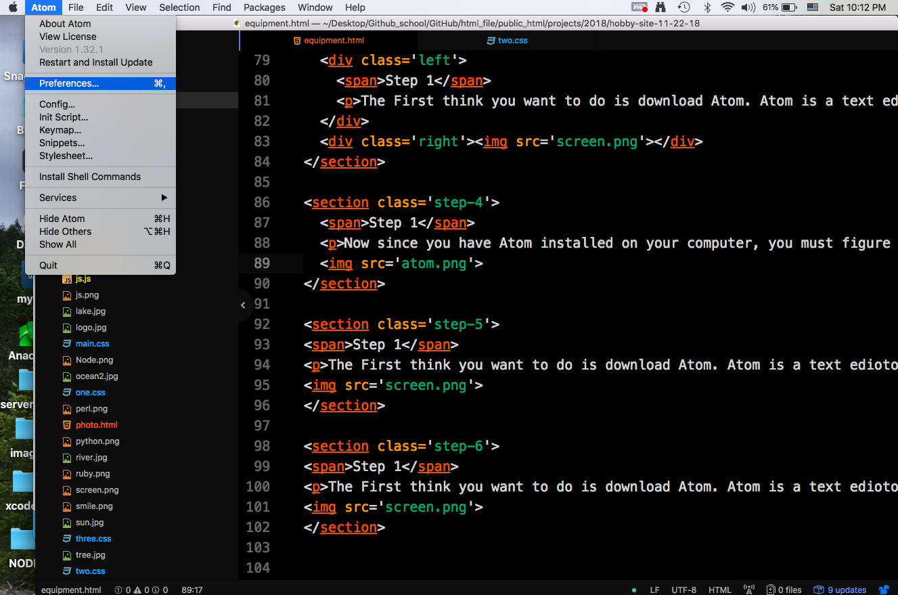
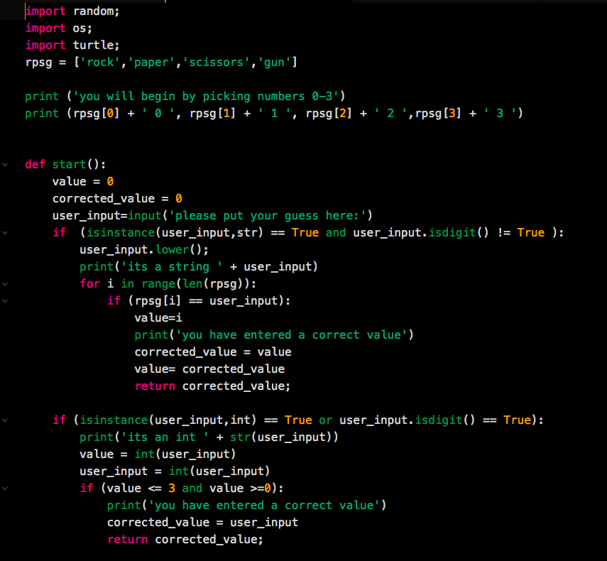

Getting Started!
Materials
The First thing you want to do is download Atom. Atom is a text ediotor designed for developers. It helps to understand how programming works becuase it colors your code toeasily identify your mistakes.
Now since you have Atom installed on your computer, you must figure out how to use atom on your own. Hint to install colored text to your atom you must go to the preferences and install a theme.
Now the last thing before we start off with programming is to download Python. This will be helpful for starting off with programming. There are tons of programming languages and it doesn't take more than a year to learn 8 of them. To be really good you need to prctice hard.
Once python is installes your going to open up
Terminal, or use
Command Prompt.
Once open your going to type
'py' for CMD, and 'python3' for Terminal. This will run a REPL. A REPL is like a tester.
It's simply put likea paper that will be
thrown away as when your done. To run A Python file type the Terminal command or CMD command in plus the name of the file.
EX: python3 superman.py or py superman.py
Our first python program is going to be a rock paper sizors program that Ive built in the past, but first Ill give you the file to try your self. After you,ve taken a look at the code and ran it, I will explain what happend. Please click on the image Below.
 Now Im going to try my best to descript what's happening in my code.
I first started by puting my imported functions that I will run later on in the code.
I made a variable named rpsg,
and made it a list. List can be helpful for storing multiple
values as you see in my program. I have printed some text to the user
so that they know how to play. Now let's get into the game. The function
to start the game is called start(). I wanted to check the users input so
that this program wont run into any errors. Once the function finished I
returned the result to the next checker to see if the player won the game.
I just wanted to show you guys how a bigger program might look like. Now for
a small program try typing print('My name is Grant Mitchell').
Thanks for reading.